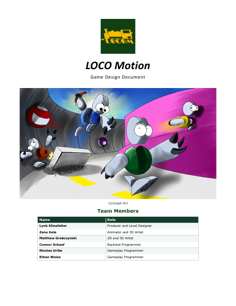
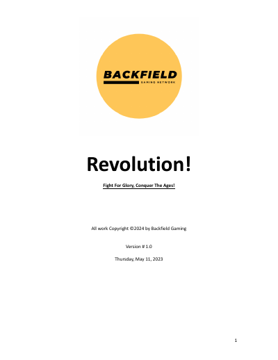
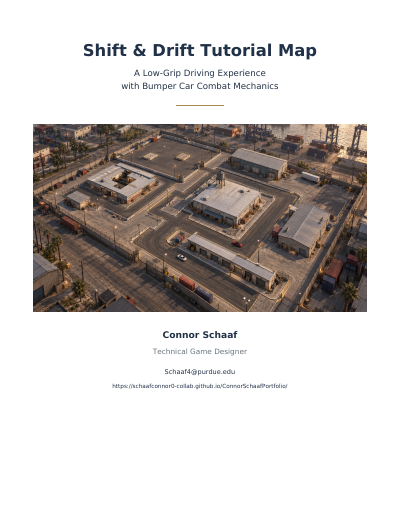
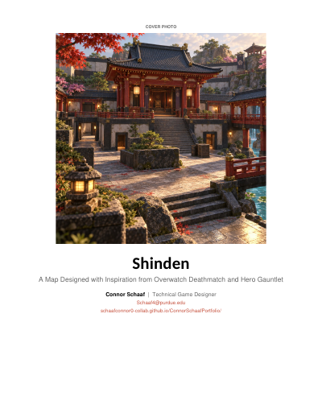
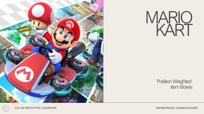

Locomotion — full game design document
The full game design document covering the game concept, race systems, items, art direction, UI, controls, multiplayer, and project timeline.
23 pages.Samples of my game design and technical documentation.

The full game design document covering the game concept, race systems, items, art direction, UI, controls, multiplayer, and project timeline.
23 pages.
My proposal for device requirements, rendering scope, and initial performance targets.
3 pages
A historical-hero shooter concept covering , win conditions, character abilities, maps, UI, and multiplayer plans.
16 pages
A driving tutorial level design covering low-grip handling, forced route choices, checkpoints, bumper-car combat, and momentum-based obstacles.
7 pages.
An Overwatch-inspired deathmatch map concept exploring elevation, cover, sightlines, and a Japanese temple setting.
4 pages.
A Mario Kart-inspired item-selection prototype pitched, created, and reflected upon.
11 pages.